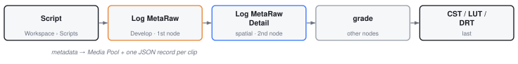

Log MetaRaw
Camera metadata and scene-referred development for DaVinci Resolve 20 and 21 · illustrated guide · v@VERSION@
Cameras write into the file how each shot was taken (Kelvin, tint, EI, lens, log profile). Log MetaRaw reads that data and uses it, in linear light, with published curves and gamuts. The script and five nodes, in this order (the number is also on each node's icon):

| Function (label in the program) | What it does | page |
|---|---|---|
| Script · Workspace › Scripts › Log MetaRaw · follows Resolve's language | ||
| Source | Whole Media Pool, or the selected clips | 3 |
| 1 · Read metadata | One row per clip: camera, lens, EI, WB, profile, data level, status | 3 |
| 2 · Write to Resolve | Metadata, columns, keywords, Camera Notes, data burn in the Media Pool | 3 |
| Export CSV | Fields Resolve lacks (EI, tint, focus…), to import as metadata | 3 |
| Copy to clips without metadata | Copies the values of read clips onto an external recorder's ProRes | 3 |
| Options | Camera tag · Overwrite metadata · Correct the Data Level · Also set Input Color Space | 3 |
| Log MetaRaw Noise node · node 1, on the log image · temporal and spatial, Metal GPU 4.0 | ||
| Profilo · Campione | Profile: expected noise by camera, ISO and format (Automatic), corrected by a sample area, or Manual; noise level | 9 |
| Temporale · Spaziale · Protezione | Temporal ±1-3 aligned frames; luma, colour, bands, shadows; detail and skin | 9 |
| Vista · Salta Noise ovunque | Removed noise, map, motion; Skip Noise everywhere turns every Noise node off | 9 |
| Stabilize · Motion Blur · nodes 2 and 3 · Mecena Motion, Apple silicon Macs only 4.0 | ||
| Stabilize › Stile · MASTER | The clip's gyro (Gyroflow): micro-shake, controlled, cinematic, crane styles | 9 |
| Motion Blur › Look · Shutter | Blur rebuilt from optical flow, e.g. 50p 90° → 25p 180° | 9 |
| Script › Acquisizione profonda | Deep acquisition: gyro and lens of every frame into MecenaClipDB | 9 |
| Log MetaRaw node (Develop) · Color › OpenFX, first node · pointwise, exportable as a LUT · Italian labels | ||
| Version · Camera · Rileggi metadata | Update check; camera read; re-read resets to the shot values | 4 |
| Ripresa › Decodifica | Shot › Decode: Clip (free) or Camera metadata (locked to shot values) | 4 |
| Bilanciamento · Temperatura · Tint | Balance: As shot or preset; Bradford adaptation in linear light | 4 |
| Punto bianco | White point eyedropper: the picked point turns neutral | 4 |
| Esposizione › EI | Exposure: double the shot EI = +1 stop, a linear gain before any curve | 4 |
| False color (×3) | Exposure (ARRI bands), temperature and tint views (as in CineMatch) | 5 |
| Spazio colore › Ingresso | Colour space › Input: space, gamma, detected, data level, reset | 5 |
| Spazio colore › Senza metadata | Without metadata: Sblocca controlli, type shot EI, Kelvin, tint | 5 |
| Uscita › Tone mapping | Output: Nessuno (CST), ACES 2.0, Luminanza, Filmico, ACES 1.3, OpenDRT | 7 |
| Compressione · Mappatura gamut | Gamut compression (ACES RGC) and gamut mapping (saturation) | 7 |
| Vibrance luci | Highlight vibrance: colour back into bright, pale highlights after rendering | 7 |
| Uscita › Spazio colore · Gamma | Like a CST; scene encodings too: DaVinci WG / Intermediate 3.2 | 7 |
| Dimensione LUT · Esporta LUT (.cube) | LUT size 17/33/65 and export of the whole node | 5 |
| Toni | Tones: Highlights (film shoulder), Bianco (white, stops), Soft Clip, Saturation | 6 |
| Mostra tutti i controlli | Show all: Contrast, Shadows, Whites, Blacks, Vibrance, Azzera toni | 6 |
| Zone | Zones Black, Shadow, Light, Specular: Exp, Sat, Range, Falloff; Pivot; zone view | 6 |
| Dati di ripresa | Shooting data: lens, focal length, iris, focus, shutter, ISO/EI, WB, fps, ND | 4 |
| Log MetaRaw Detail node · right after · spatial, left out of Generate LUT | ||
| Modalità · Fase | Mode: Zonale, Split grade, Unito; phase: three phases, one node each | 8 |
| Ingresso (IDT) · Destinazione (ODT) | Input encoding; where black (zone 0) and white (zone X) land | 8 |
| Misura | Measure: Ombra, Luce, Misura zone, Misura automatica, zone placement | 8 |
| Split grade · Provino | Luci morbide, Ombre dure, Grado, Unione; test strip and Usa la cella | 8 |
| Gamma dinamica | Dynamic range: Local Contrast, Highlights, Shadows, Brucia i bordi; views | 8 |
| Presenza · Avanzate · Velo | Texture, Clarity, Dehaze; radius, thresholds, Bianco; haze level and colour | 8 |
| Guida | Guide: for the chosen phase, purpose, three steps, next step | 8 |
It is not raw. A log MP4 is already compressed, 8 or 10 bit, with the camera's noise
reduction baked in: in linear light it behaves in a way that reminds you of raw, but what the camera did not record does
not come back. Exposing well matters most. Original files are never modified.